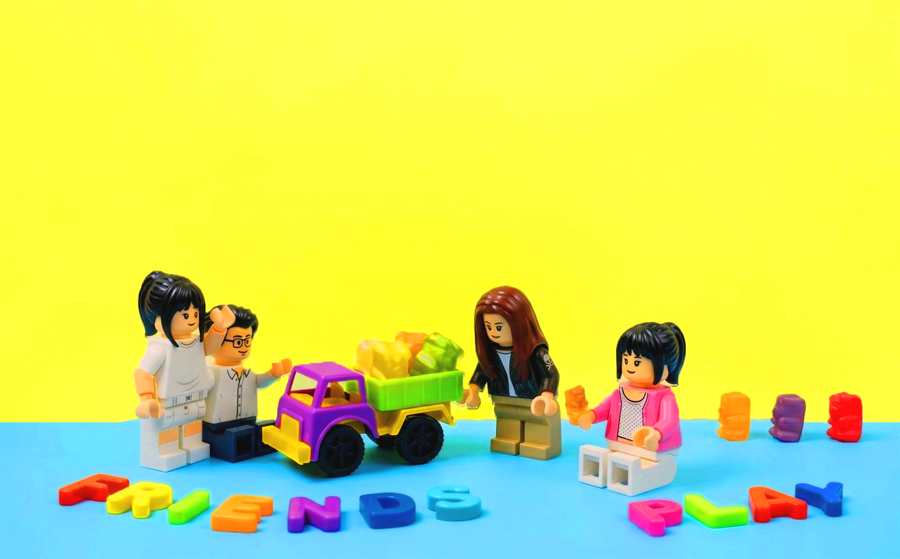

Step 00
우리가 만난 계기
2026년, 디프 수업 조가 만들어진 과정을 레고 설명서처럼 한 장씩 넘겨보세요.



Step 00
2026년, 디프 수업 조가 만들어진 과정을 레고 설명서처럼 한 장씩 넘겨보세요.
Step 01
2026년, 경기도 광주에서 온 성광식, 수원의 양영희, 서울 노원의 김서현, 남양주의 임해민은 계원예술대학교 신입생으로 반갑게 만나게 되었습니다.
Step 02
디지털 프로그래밍 수업에서 이승연 교수님은 중간고사를 전교 1등급으로 잘 본 광식이를 조장으로 뽑으셨습니다.
광식이는 디자인 능력이 뛰어난 영희와 코딩 경험이 있는 해민이를 든든한 팀원으로 선택했습니다.
Step 03
그리고 마지막 남은 한 자리...
"날 뽑아줘! Pick me up!"
서현이가 춤까지 추는 엄청난 열정 어필 끝에 극적으로 합류하며, 마침내 웃음 가득한 우리의 드림팀이 완성되었습니다!